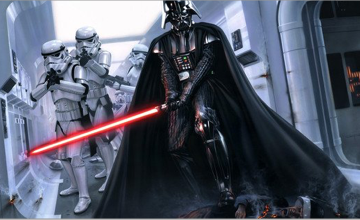
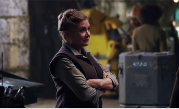

Recent News
-
Cassian and K-2SO's Alternate Fate
Rogue One is proving to be a fascinating case study in alternate universes, and there is enough video evidence to suggest that multiple different cuts with varying...
Read more » -

Darth Vader's Final Rogue One Scene
Star Wars: Rogue One has been in theaters for just about a month, and it is safe to say the movie is a huge success. Not only has the first ever live-action theatrically released Star Wars Anthology movie...
Read more » -

How Leia May Be Brought Back for Episode IX
The death of Carrie Fisher has thrown the Star Wars franchise for a loop. They're going to have to film the final part of their trilogy without one of the series' most important characters. However...
Read more »
Featured Products
-

Director Krennic costume
$34.99
-

Queen Amidala costume
$65.99
-

Jango Fett costume
$119.99
View all products»